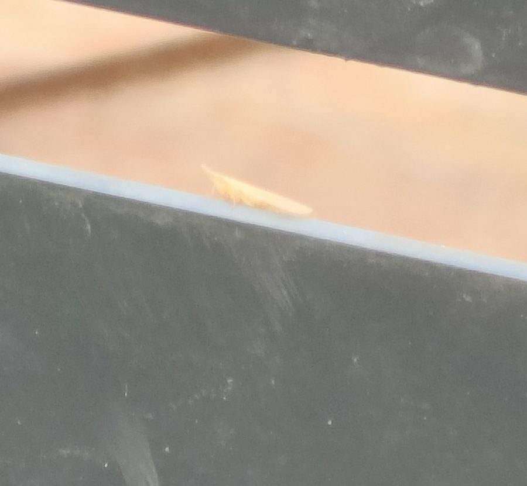

पायरिलाSugarcane Pyrilla
Pyrilla perpusilla · Delphacidae · INS-0086

- Scientific nameवैज्ञानिक नाम
- Pyrilla perpusilla (Walker, 1858)
- Familyकुल
- Delphacidae
- Hindiहिंदी
- पायरिला
- Local namesस्थानीय नाम
- pyrilla, pairilla, ganne ka fudka, sugarcane hopper
- Status hereयहाँ की स्थिति
- native
- Movementआवागमन
- Resident, here all year
- IUCNIUCN
- not evaluated
- Reviewसमीक्षा
- audited and independently read
When to look कब देखें
Expected mainly in May, June, July, August, September, October, November.मुख्यतः मई, जून, जुलाई, अगस्त, सितंबर, अक्टूबर, नवंबर में अपेक्षित।
Uses and possibilities उपयोग और संभावनाएँ
Drawn from the documented uses in the profile below, where each is labelled traditional, current or a research lead. All uses →
Tell it apart from इनसे अलग पहचानें
पायरिला / Sugarcane Pyrilla
Pyrilla perpusilla (Walker, 1858) — Delphacidae
पायरिला — गन्ने की पत्तियों के नीचे छिपा बादामी फुदका जो रस चूसता है और हज़ारों की भीड़ में होता है। गर्मी के बाद मानसून में आता है और गन्ने को कमज़ोर करता है। पत्तियों पर शहद जैसी चीज़ गिरती है जिस पर काली फफूंद हो जाती है। मुड़ी हुई पत्तियों के नीचे अंडे देता है, सफ़ेद पाउडर से ढके हुए।
Quick Identification त्वरित पहचान
| Feature | Description |
|---|---|
| Adult colour | Brown to dark brown, with pale markings |
| Size | 6–8 mm long; larger than rice planthopper |
| Shape | Robust, wedge-shaped; wings held roof-like |
| Location | Always on the undersurfaces of leaves; under leaf sheaths |
| Clustering | Dense colonies, sometimes hundreds per tiller |
| Nymphs | Pale yellowish-brown, wingless, scale-like appearance |
| White powder | Nymphs covered with waxy white powder |
| Damage | Leaves yellowed, curled, drying from the tip |
| Honeydew | Copious sticky residue and black sooty mould |
Field tip: Part the lower leaves of a sugarcane plant and look at the undersides: you will see a dense mass of brown insects. They hop when disturbed. The underside of the leaf and the leaf sheath are covered with honeydew and sooty mould.
हिंदी — कैसे पहचानें: गन्ने की पत्ती उलटो — पत्ती के नीचे हज़ारों भूरे फुदके, सफ़ेद पाउडर से ढके। पत्तियों पर काली फफूंद। पत्ती सूख गई है।
Morphology आकारिकी
Biometrics:
| Measurement | Range |
|---|---|
| Adult body length | 6–8 mm |
| Nymph (1st instar) | 1 mm, pale yellow |
| Nymph (final instar) | 6–7 mm, brown |
| Egg | 2.5–3 mm, embedded in leaf sheath |
| Developmental time (egg to adult) | 30–40 days at 25–28°C |
Adult: Brown to dark brown, robust, with a distinctive wedge shape typical of planthoppers. Elytra are moderately punctate. The hind tibia bears the characteristic spur of the Delphacidae. Antennae are relatively long. Wings are fully developed; both short-winged and long-winged forms may occur, depending on population density.
Nymph: Pale yellowish-brown, flattened, scale-like, with a ring of white waxy setae around the body margin, giving a distinctive appearance. Five instars.
Egg: Large, oval, embedded in rows inside the leaf sheath or in the midrib; female chews a small cavity for each egg.
हिंदी: भूरा, मजबूत, सुँड नहीं। निम्फ़ सफ़ेद पाउडर से ढका। अंडे पत्ती की म्यान में।
Behaviour & Ecology व्यवहार और पारिस्थितिकी
The sugarcane pyrilla is a specialist sap-feeder on Sugarcane and a few closely related grasses. It appears each year with the advent of the monsoon (June–July) in most of India. Adult females lay eggs inside the leaf sheaths of the emerging crop; nymphs hatch and feed on the underside of leaves in dense clusters. The insect's feeding causes a yellowing of the leaf tissue and the accumulation of honeydew, which supports sooty mould growth, further reducing photosynthesis. Development is rapid in warm, moist conditions; a generation takes 30–40 days. There are 3–4 overlapping generations per season in monsoon-dependent areas like eastern UP.
Unlike the brown planthopper, which migrates over long distances, the pyrilla appears to colonise Sugarcane locally from overwintering sites (likely perennial grasses and sugarcane ratoons). The insect has a complex of natural enemies in India; spiders and parasitoid wasps are important. However, broad-spectrum spraying eliminates natural enemies faster than the pyrilla itself, leading to resurgence.
The pyrilla can also transmit sugarcane virus disease (SVD), a problem in some regions, though the transmission is less efficient than in the case of the brown planthopper transmitting rice viruses.
हिंदी: मानसून में आता है। गन्ने की निचली पत्तियों पर झुंड में। अंडे पत्ती की म्यान में। गर्मी में तेज़, ठंड में कम।
Life Cycle / Phenology जीवन चक्र
| Stage / season | Event |
|---|---|
| Egg, 8–10 days | In leaf sheath; 50–100 eggs per female |
| Nymph, 20–25 days | Five instars; on leaf undersurface |
| Adult, 2–4 weeks | Feeds and lays eggs |
| Complete cycle | 30–40 days at 25–28°C |
| May–June | Initial infestation on young Sugarcane; population builds |
| July–September | Heavy populations during monsoon; multiple generations |
| October–November | Populations decline as Sugarcane crop matures |
| December–April | Absent or low; survives on ratoons and wild grasses |
हिंदी: जून में आता है, सितंबर तक चोटी मारता है। 30–40 दिन में पीढ़ी। चार पीढ़ियाँ मौसम में।
Host Plants or Prey आहार
- Sugarcane (Saccharum officinarum) — primary host
- Other grasses: wild sugarcane, Erianthus, Saccharum wild species
- Highly specialised; does not feed on cereals like rice or wheat
Predators / Natural Enemies शत्रु
- Spiders: jumping spiders, wolf spiders, web-building spiders
- Parasitoid wasps: Anagrus and Oligosita species (egg parasitoids)
- Predatory bugs: Rhinocoris and other predatory Hemiptera
- Predatory beetles: coccinellids; feed on nymphs
- Entomopathogenic fungi: Beauveria, Isaria under high humidity
- Hymenopteran endoparasitoids: attack late-instar nymphs and adults
Agricultural / Human Relevance कृषि प्रासंगिकता
Periodic pest of sugarcane. The pyrilla is a recurrent problem in monsoon-dependent sugarcane areas, particularly eastern India. Outbreaks are associated with good monsoon rains and warm temperatures. Loss of sugar content and reduction in cane yield can be severe in heavily infested fields. The insect can also transmit sugarcane virus disease in some regions.
Today's management:
- Monitoring and threshold: Weekly scouting from July onwards; action taken when populations exceed 20–30 insects per leaf.
- Cultural practices: Timely harvest of ratoons; removal of crop residues; planting of sugarcane varieties with good vegetative vigour (which tolerate feeding better).
- Insecticide: Neem oil, imidacloprid, or other selective insecticides applied when thresholds are exceeded.
- Biological control: Conservation of natural enemies, particularly parasitoid wasps and spiders, through minimised spraying and maintenance of wild grasses in field margins.
Research direction (a lead, not a result). Characterisation of sugarcane varieties resistant to pyrilla feeding; biology and field efficacy of parasitoid wasps (Anagrus spp.); population dynamics and factors driving outbreak years.
हिंदी: साप्ताहिक निगरानी। प्रतिरोधी किस्में। सीमा से ऊपर गए तो नीम का छिड़काव। मकड़ी और परजीवी ततैयों को बचाओ।
Expected Locally स्थानीय रूप से अपेक्षित
Not a field record. Written from published accounts for eastern Uttar Pradesh. The pyrilla is documented on sugarcane throughout the Indian subcontinent.
अभी तक स्थानीय पुष्टि नहीं। यह विवरण प्रकाशित स्रोतों से है।
Expected on Sugarcane throughout Basti district during the monsoon season (June–November), particularly in years with good rainfall. A photograph of dense clusters of brown insects on the undersides of Sugarcane leaves, with date and location, would confirm a local record.
Distribution वितरण
Global range: Native to the Indian subcontinent and Southeast Asia; found in all major sugarcane-growing regions from India to Indonesia.
In India: All sugarcane-growing states; endemic across the region.
In Uttar Pradesh: Present in all Sugarcane-growing areas; particularly in eastern districts during monsoon months.
In Basti district / eastern UP: Expected on Sugarcane during the monsoon and early post-monsoon season; incidence varies with rainfall and temperature.
Research Questions शोध प्रश्न
Anyone can investigate these | कोई भी इन प्रश्नों की जाँच कर सकता है
- How many pyrilla nymphs and adults are present on a single Sugarcane leaf in your field? / एक पत्ती पर कुल कितने हैं? — Count insects on randomly selected leaves; sample weekly.
- Which predator (spider, wasp, beetle) is most abundant when pyrilla populations are controlled in your field? — Sample insects; identify predators.
- Does the pyrilla infestation increase with rainfall and humidity? / बारिश के बाद ज़्यादा आता है? — Correlate local rainfall data with insect counts.
- How many eggs does a single female lay in her lifetime on Sugarcane? — Confine a female; count eggs; replace leaf daily.
- Which Sugarcane variety in your village is least infested by pyrilla? / कौन सी किस्म में कम आता है? — Inspect multiple varieties side by side.
Similar Species मिलती-जुलती प्रजातियाँ
| Species | How to tell apart | हिंदी |
|---|---|---|
| Brown planthopper (Nilaparvata lugens) | Smaller (3–4.5 mm); infests rice not sugarcane; different host; found at the base of plant, not on leaf undersurface | धान का फुदका, छोटा, तने पर |
| White-backed planthopper | On rice; has white stripe down the back; different host | सफ़ेद धारी वाला |
| Other Pyrilla spp. | Related planthoppers on other grasses; difficult to distinguish without expert examination | दूसरी जाति, अलग पौधे पर |
Field rule: Brown, robust insect in dense clusters on the undersides of Sugarcane leaves, with white powder on nymphs and sooty mould below: sugarcane pyrilla.
Taxonomy & Classification वर्गीकरण
Original description. Described by Walker in 1858 in List of Hemiptera as Delphax perpusilla from specimens collected in India. The genus Pyrilla was erected by Stål in 1859. Perpusilla refers to the small size relative to related species.
Subspecies. No subspecies are currently recognised.
Family and order placement. Order Hemiptera (true bugs), family Delphacidae (planthoppers), subfamily Delphacinae. The genus Pyrilla comprises sugarcane-feeding planthoppers of Old World distribution.
Phylogenetic notes. Pyrilla perpusilla is part of a species complex; related species infest other grasses in Asia. Its specialisation on Sugarcane and wild sugarcane is likely derived; ancestral species may have been broader in host range.
IUCN status rationale. Not evaluated. As a widespread agricultural pest and abundant species, no conservation assessment is warranted.
Photo Gallery फोटो गैलरी
Photos needed आवश्यक फोटो
- [ ] Pyrilla cluster on sugarcane leaf undersurface (पत्ती के नीचे)
- [ ] Sooty mould on infested leaf (काली फफूंद)
- [ ] Adult pyrilla dorsal view (कीट ऊपर से)
No photos yet — add field photos to media/species/sugarcane_pyrilla/ and run node scripts/sync_photos.js.
References संदर्भ
- Walker, F. (1858). List of Hemiptera Homoptera, part 1. British Museum, London. [original description, as Delphax perpusilla]
- Stål, C. (1859). Hemiptera from the East Indian Archipelago. Öfversigt af Kongliga Vetenskaps-Akademiens Förhandlingar 16: 385–445. [genus]
- Atwal, A.S. & Sandhu, G.S. (1971). Insect Pests of Crops and Their Control in India. Kalyani Publishers, New Delhi.
- Srivastava, R.P., Das, B.C. & Samant, R. (2012). Insect Pest Management in Sugarcane. ICAR–NCIPM, New Delhi.
- Indian Council of Agricultural Research (2019). Integrated Pest Management in Sugarcane. ICAR–NCIPM, New Delhi.
- GBIF Occurrence Data — Pyrilla perpusilla, India (2023).
Source file: species/fauna/insects/sugarcane_pyrilla.md